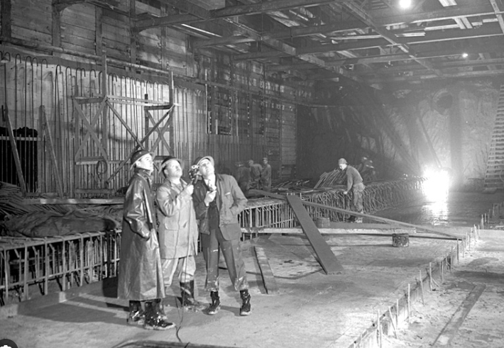

Somos tu mejor opción para abastecer tus proyectos de construcción y renovación. En Codo a Codo Construcciones, ofrecemos una amplia gama de materiales de construcción de alta calidad a precios competitivos. Nuestra misión es proporcionar a nuestros clientes los recursos esenciales para llevar a cabo proyectos exitosos.
Nuestra historia
Desde 1945, Codo a Codo Construcciones ha sido una empresa líder en soluciones de construcción y materiales de alta calidad. Nuestra experiencia y compromiso con la excelencia nos han permitido crecer y expandirnos en el mercado.
Productos y servicios
Ofrecemos una amplia variedad de productos y servicios, desde materiales de construcción como ladrillos, cemento y hierro, hasta soluciones de construcción como proyectos a medida y asesoramiento técnico. Nuestros productos son de alta calidad y nuestros servicios son personalizados y adaptados a las necesidades de cada cliente.
Nuestro compromiso
En Corralón Codo a Codo Construcciones, nuestro compromiso es ofrecer soluciones de construcción y materiales de alta calidad, con un servicio al cliente excepcional. Nos esforzamos por mantener relaciones duraderas y satisfactorias con nuestros clientes, y por ser un socio confiable en cada proyecto.
Nuestro equipo
Contamos con un equipo de profesionales altamente capacitados y experimentados en el campo de la construcción. Nuestros colaboradores están comprometidos con la excelencia y la satisfacción del cliente, y trabajan en conjunto para garantizar el éxito de cada proyecto.